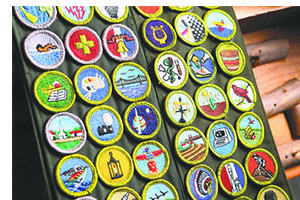

You can learn about sports, crafts, science, trades, business, and future careers as you earn merit badges. There are more than 130 merit badges. Any Boy Scout may earn a merit badge at any time. You don’t need to have had rank advancement to be eligible.
Talk to Scoutmaster Mr. Chang about your interest in earning a merit badge. Read the requirements of the merit badges you think might interest you. Choose one to earn. Mr. Chang will give you a signed merit badge application (the “blue card”) and the name and contact information of a merit badge counselor. These individuals have special knowledge in their merit badge subjects and are interested in helping you.
Get in touch with the merit badge counselor and tell them that you want to earn the merit badge. The counselor may ask to meet you to explain what is expected and to start helping you complete the requirements. You should also discuss work that you have already started or possibly completed.
Unless otherwise specified, work for a requirement can be started at any time. Ask your counselor to help you learn the things you need to know or do. You should obtain and read the merit badge pamphlet on the subject.
Edit spreadsheetWhen you are ready, call the counselor again to make an appointment. When you go take along the things you have made to meet the requirements. If they are too big to move, take pictures or have an adult tell in writing what you have done. The counselor will test you on each requirement to make sure you know your stuff and have done or can do the things required.
When the counselor is satisfied that you have met each requirement, they will sign your application (the “blue card”). Give the signed application to your unit leader so that your merit badge emblem can be secured for you.
The current Boy Scout Requirements book is available from your local Scouting merchandise distributor. It may also be ordered online at www.scoutstuff.org. Merit badge requirements are revised as needed to reflect updated information and technology. Click here to view new and recently revised merit badges.
You are expected to meet the requirements as they are stated—no more and no less. You must do exactly what is stated in the requirements. If it says "show or demonstrate," that is what you must do. Just telling about it isn’t enough. The same thing holds true for such words as "make", "list", "in the field", and "collect", "identify", and "label."
For a complete list of the official requirements of the Boy Scouts of America, visit this page.